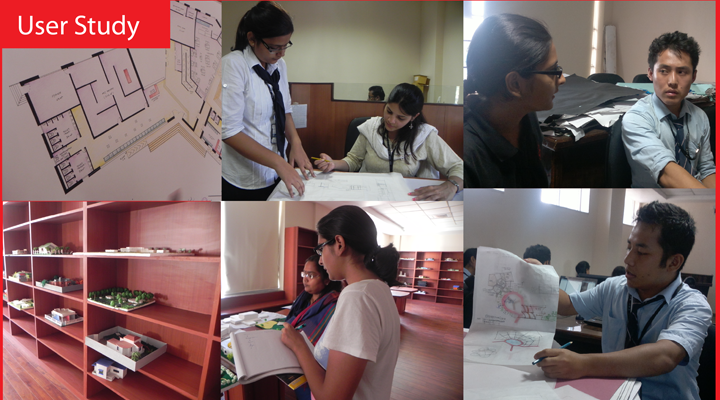
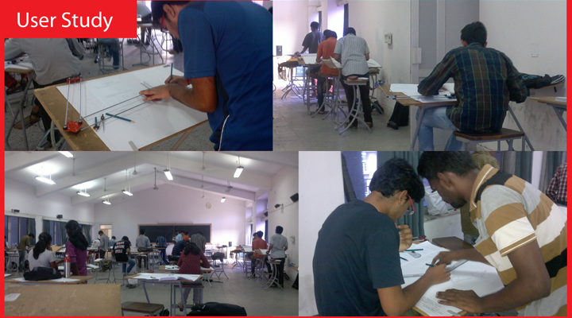
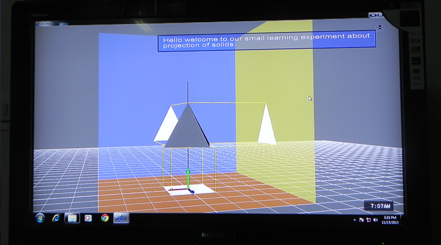
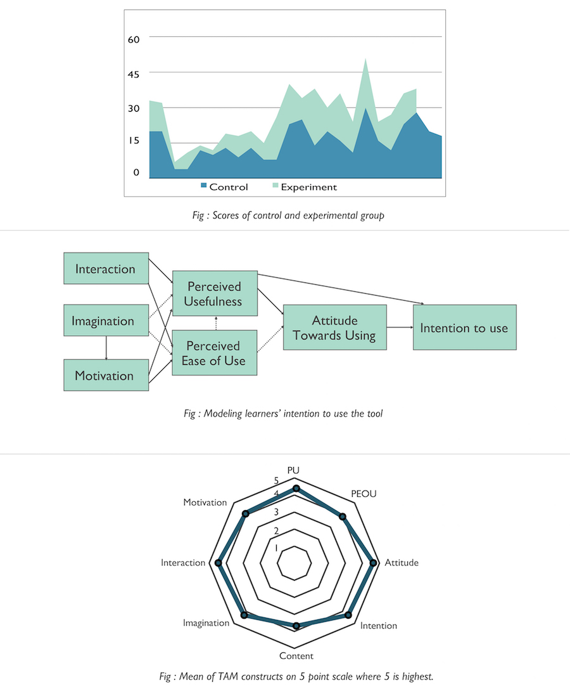

ARCHI:Virtual Reality based Learning and Instructional AID
Project Guide:Prof.(Dr) Pradeep Yammiyawar Final Year Project Duration:Aug 2013-Apr 2014 Contribution:User Research, Product Development, Usability Testing, Controlled Experiment
Overview
Freshman year students in architecture programs have to study the fundamental course of “engineering drawing” or “architectural graphics”. The goal of the course is to enhance students’ spatial thinking. However, most students find the learning curve to be steep, since they are primarily used to 2D mental visualizations.
Why Archi?
Archi is an immersive VR platform that aids the aforementioned course of “engineering drawing”. It scaffolds students’ learning as they are introduced to topics of visualization of objects and its projections in 3D space. Students can freely manipulate objects’ orientation in 3D space, and watch changes in projections in real time
Project Journey
1 Contextual Inquiry
We used contextual inquiry as our primary research method. Our core users were first year undergraduate architecture students. We observed classes and discussion sessions in progress. This helped us capture the experiences and struggles of students with the course. We also conducted qualitative interviews with instructors and tutors. In parallel, we conducted literature review on learning and cognition models. We analyzed the collected qualitative data by means of an affinity wall.
 2.Insights
Our key insight was that students’ initiation into architectural graphics is not smooth.In context of Indian architectural curriculum, until high school none of the subjects require spatial thinking. Come first semester of college, and students are expected to visualize and orient objects mentally without any prior experience. Thus, a platform which can scaffold their transition into 3D thinking would make the course fundamentals easier to grasp.
3.Recommended Solution
From our insights we realized the proposed solution should : 1. Aid in 3D visualization without losing the established rules of the course. 2. Link to coordinate geometry since students are comfortable with "math of 3D space". 3. Enable students to "learn by doing" for best learning. 4. Decrease the conceptual distance between theory and projections. The technology of immersive VR allows users to perceive and interact in manners similar to real world. Given the needs of the solution, it was an apt choice for the platform. For our prototype, we used Vizard, a virtual reality toolkit in Python.
4.Prototype and Pilot Testing
We simulated 3D objects students commonly encounter in the course - pyramids, cubes, etc. Projections of the simulations are mapped on vertical, horizontal and profile planes. The simulations could be manipulated freely along the three axes of rotations. Changes to the simulations and their projections were updated simultaneously. The conventions of the course were followed in the platform. We pilot tested the initial prototype to identify key usability issues, and fix them before our controlled experiment with target users.
5.Controlled Experiement
The experiment was conducted to gauge the platform's effectiveness as a learning tool. The experiment was conducted with a total of 44 students. Results were significant and in favor of the platform. We also used technology acceptance model or TAM to model attitudes of users towards using the technology. It showed high inclination towards using the tool. You can read more here: 1. Pandey, M., Luthra, V., Yammiyawar, P. G., and Yammiyawar, P. (2014). Role of immersive VR in fostering creativity among architecture students. In 3rd International Conference of Design Creativity. 2. Pandey, M., Luthra, V., Yammiyawar, P. G., and Yammiyawar, A. P. (2014). Virtual Reality Based Learning Aid to Understand Projection and Section of Solids in Architectural Graphics. In HCI International 2014-Posters’ Extended Abstracts (pp. 625-630). Springer International Publishing.
